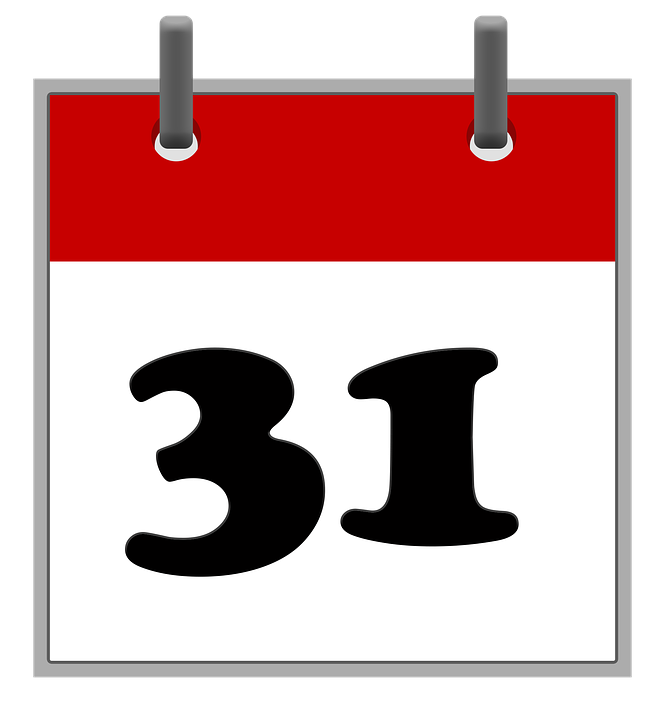
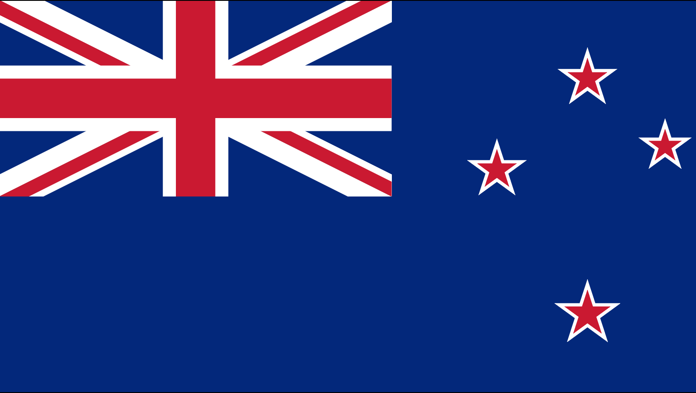

DASHBOARD
De weersomstandigheden in Amsterdam en Auckland zijn in kaart gebracht. Wat deze steden gemeen hebben, is dat ze ongeveer aan de andere kant van de wereld liggen ten opzichte van elkaar. Zo kunnen de bemanningsleden zien hoe het weer op een plek aan de ene kant van de wereld is ten opzichte van een plek aan de andere kant van de wereld. Om te landen, is het handig om te weten op welke dagen je beter niet kan landen in verband met bepaalde feestdagen. Daarnaast is het altijd handig om de datum te weten.
Date
Amsterdam

Belangrijke dagen
Do not land on:
Dag met meeste zonlicht:
06-21
Auckland
Belangrijke dagen
Do not land on:
12-31
Dag met meeste zonlicht:
06-21